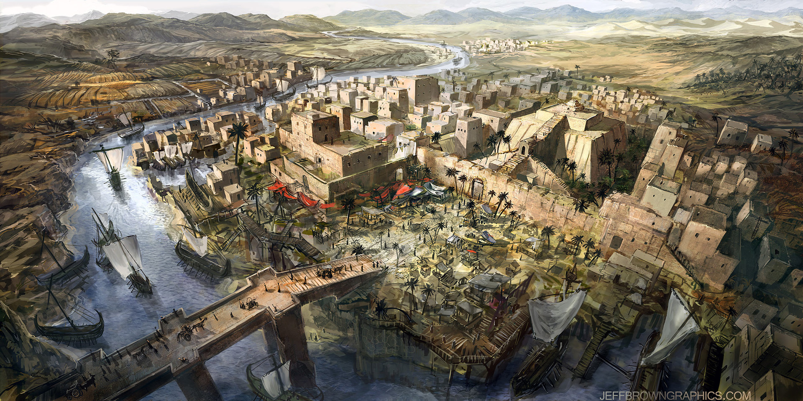

Como era su cultura?

La cultura de Mesopotamia, la "cuna de la civilización", se destacó por sus innovaciones en escritura, derecho, arquitectura, astronomía y matemáticas. Los mesopotámicos desarrollaron la escritura cuneiforme, los primeros códigos de leyes, y avances en áreas como la arquitectura (bóvedas y cúpulas) y la medición del tiempo. Su legado incluye la literatura sumeria, con temas como mitos, himnos y lamentaciones, así como una religión politeísta con diversos dioses locales.
La astronomía en Mesopotamia tuvo un impacto significativo en el desarrollo del conocimiento humano. Los antiguos mesopotámicos, especialmente los sumerios, babilonios y asirios, fueron pioneros en la observación del cielo y el registro de eventos astronómicos. Aquí algunos aspectos clave sobre su metodología en astronomía:
término arameo biritum birit narim correspondía a un concepto geográfico similar. Más tarde el término Mesopotamia se aplicó de manera más general a todas las tierras entre el Éufrates y el Tigris, incorporando así no solo partes de Siria, sino también casi todo Irak y el sureste de Turquía. Las estepas vecinas al oeste del Éufrates y la parte occidental de las montañas Zagros también se incluyen a menudo bajo el término más amplio de Mesopotamia. Por lo general se hace una distinción adicional entre Mesopotamia norte o superior y Mesopotamia sur o inferior. La Alta Mesopotamia, también conocida como Jazira, es el área entre el Éufrates y el Tigris desde sus fuentes hasta Bagdad, mientras que la Baja Mesopotamia es el área desde Bagdad hasta el Golfo Pérsico e incluye Kuwait y partes del oeste de Irán.
Aspectos claves de la cultura de mesopotania:
Escritura:
Los mesopotámicos inventaron la escritura cuneiforme, que evolucionó de pictográfica a fonética, permitiendo la documentación de conocimiento en áreas como la literatura, las matemáticas, la astronomía y la historia.
Derecho:
Desarrollaron los primeros códigos de leyes, como el Código de Hammurabi, que regulaban aspectos de la vida social y legal.
Arquitectura:
Construyeron ciudades con templos y zigurats, y desarrollaron avances en técnicas de construcción como la bóveda y la cúpula.
Astronomía y matemáticas:
Realizaron observaciones astronómicas, desarrollaron un calendario de 12 meses y 365 días, y crearon un sistema de numeración sexagesimal.
Religión:
Practicaban el politeísmo, adorando a diversos dioses locales y comunes.
Literatura:
La literatura sumeria incluye mitos, himnos y lamentaciones, conservados en tablillas de arcilla.
Sociedad:
La sociedad mesopotámica estaba estructurada jerárquicamente, con el rey en la cúspide, seguido del clero, la clase alta, la clase baja y los esclavos.